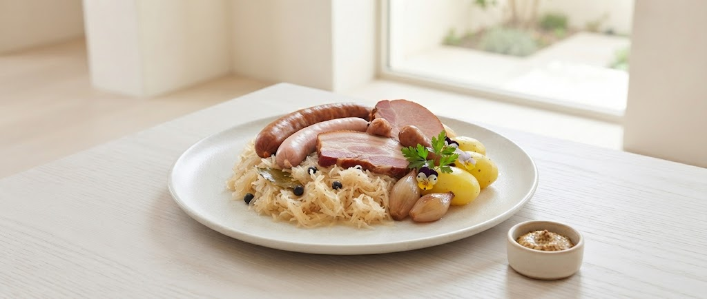
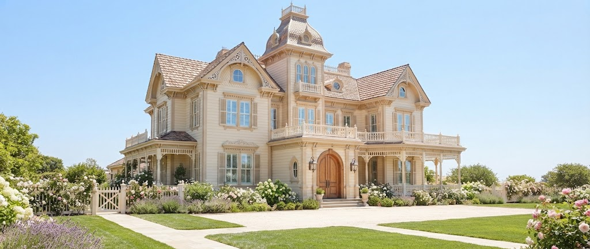

当店のシュークルートは、ただの伝統料理ではありません。北海道ならではの力強い大地の恵みを受けた豚肉や、繊細な甘みを持つ野菜。これらをアルザスの伝統的な発酵技術と合わせることで、ここでしか味わえない「究極の一皿」へと昇華させました。
道内各地の生産者から届く新鮮な食材を贅沢に使用。
本国フランスのレシピを忠実に守り、じっくりと時間をかけて。

1967年、フランス・アルザスのイローゼンという村で、一軒のレストランがミシュランの三つ星に輝きました。その名は「オーベルジュ・ド・リル」。
札幌・円山公園の隣、静寂に包まれたこの地で、私たちはその誇り高き歴史を継承しています。ヨーロッパの古城を思わせる洋館、時代を越えて愛される調度品。ここでは、流れる時間さえもが特別な調味料となります。
Read More...緑に囲まれた洋館はフランスを思わせる佇まいでとても素敵です。お料理の構成のバランスも良く、最後まで美味しくいただくことができました。
身内の結婚式を行いました。外観内装雰囲気も落ち着いており、レストランとしての料理はどれも美味しいものばかり。突然の飛び入りにも快く引き受けて頂き嬉しかったです。
スタッフさんの対応が素晴らしかったです。空間も素敵でした。季節のものがたくさん使われていてよかったです。
より深く北海道とアルザスの魅力に触れていただくために。
オーベルジュ・ド・リル サッポロが準備を進めている、新しいおもてなしの構想です。
シュークルートに使用される厳選豚肉やキャベツなど、道内各地の生産者の情熱や歴史を記した特製カードをお料理と共にお届け。カード裏面のQRコードから特別映像もお楽しみいただけます。
グランシェフの味をご自宅や大切な方へのギフトに。真空低温調理した特製シュークルートとソムリエ厳選のアルザスワインをセットにした、特別テイクアウト・全国配送ギフトBOXをご用意します。
スマートカジュアルを推奨しております。特別な一日を演出するため、男性の方はジャケットの着用をおすすめしております。
当店のスペシャリテとして常にご用意しておりますが、数に限りがございます。ご希望の際は、ご予約時にお申し付けいただけますと確実です。